Start here
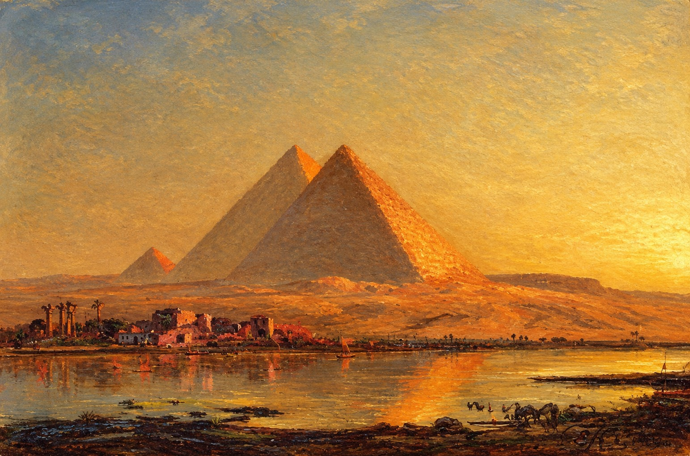
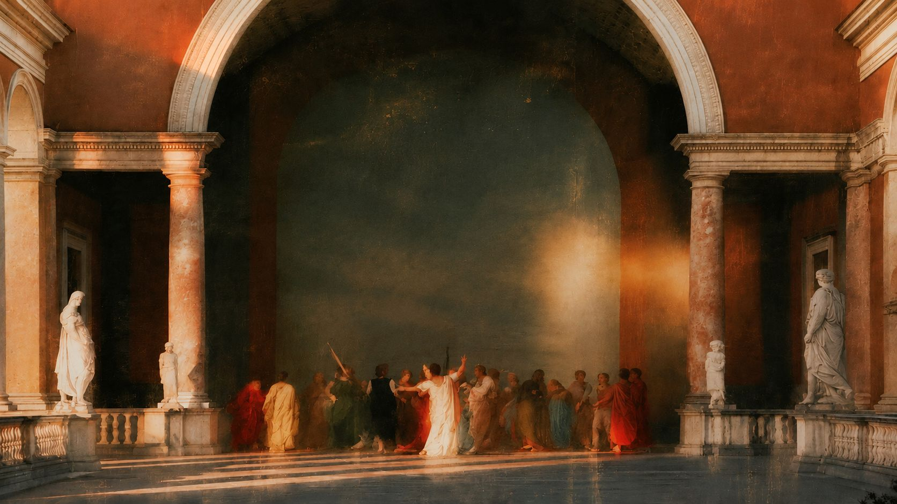
Walk through the monuments and masterpieces
that shaped our world, one era at a time.

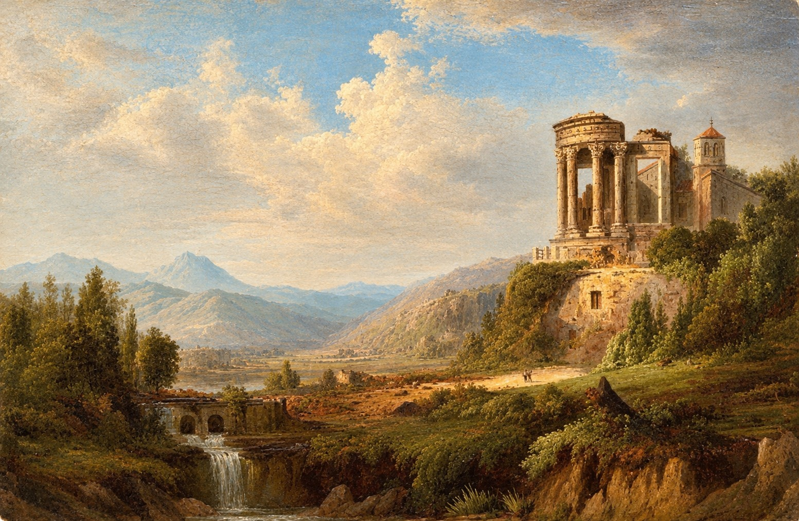
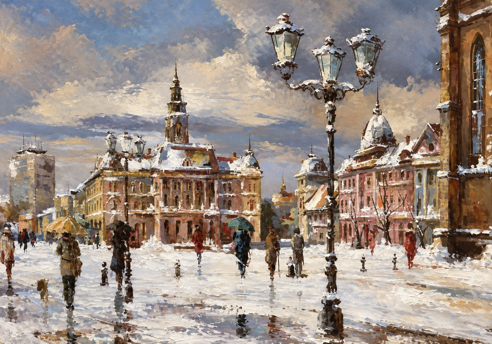
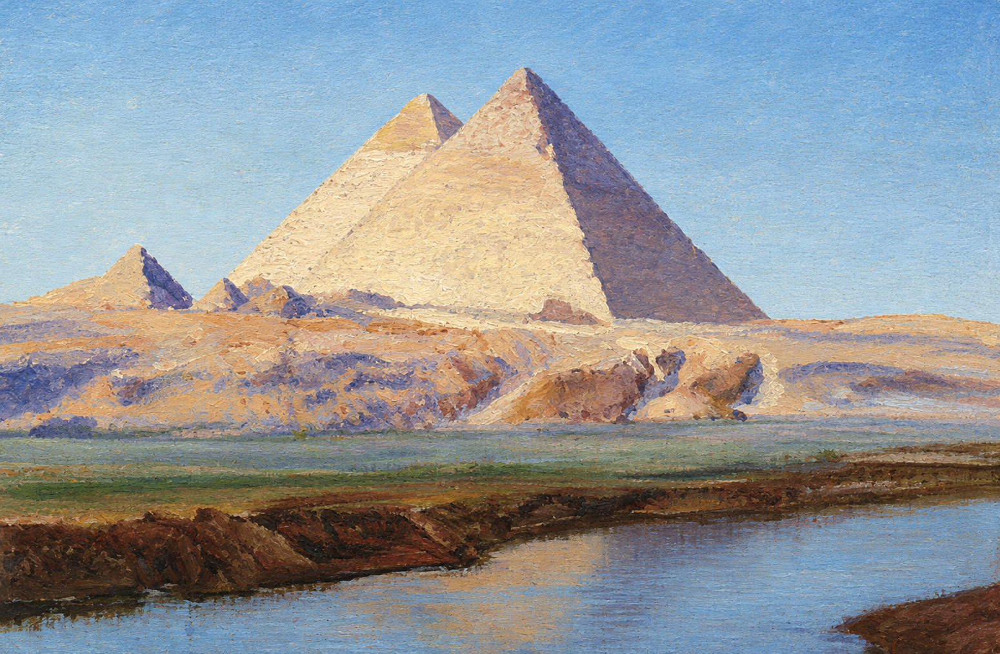
Sacred Nile waters, ancient lands

Egyptian civilization grew along the Nile, where yearly floods made the land fertile and let a kingdom flourish for over three thousand years. Out of that stability came temples, tombs and the pyramids: monuments built to outlast their makers. Today they remain among the most enduring works humans have ever made.
From the Nile to the MediterraneanChapter 02 · Greece & Rome
Our digital archive preserves the grand temples, fallen columns and monuments of the classical world, so their stories can be explored long after the stones have worn away.
Where ideas took form
The city-states of ancient Greece gave the world the Doric, Ionic and Corinthian orders: three styles of column that shaped temples for centuries. The Parthenon, begun in 447 BCE on the Athenian Acropolis as a temple to Athena, became the most famous of them and still defines how we picture classical beauty.
Follow the temples to RomeThen & now
Drag the slider to compare a monument as time left it with its restored view.
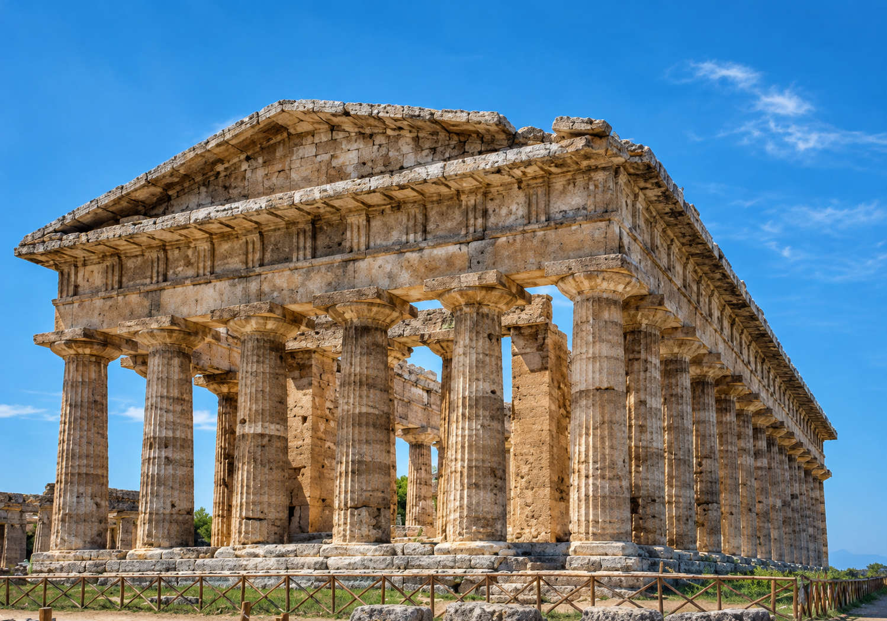
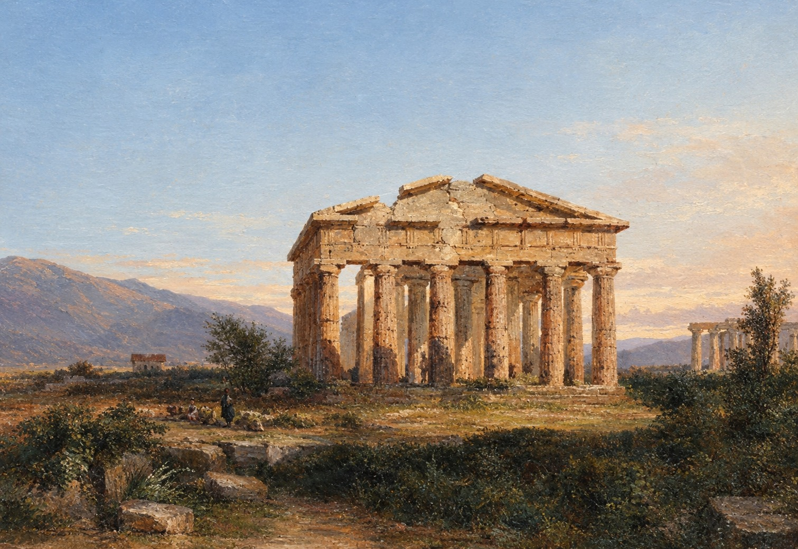
Then NowPaestum, Italy · Greek temple
Paestum began as a Greek colony and later became Roman. Follow it to RomeChapter 02 · Rome
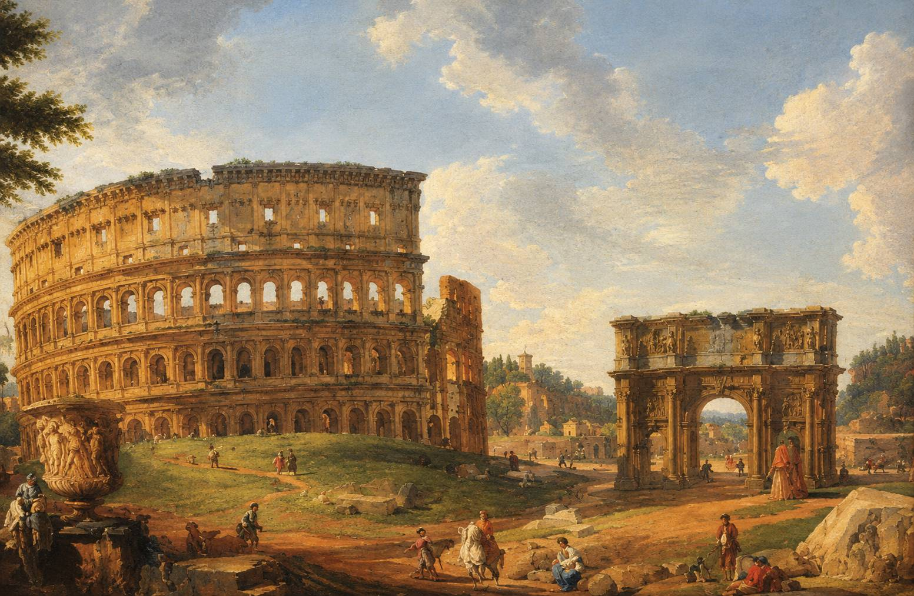
By tradition, Romulus founded the city on the Tiber, and seven kings ruled it.
Governed by elected magistrates and the Senate, Rome expanded across the Mediterranean.
Ruled by emperors, Rome built roads, aqueducts and the Colosseum, which opened in 80 CE.
Some moments deserve more than a memory a photograph captures a moment Art gives it another life These are the works that kept history alive.
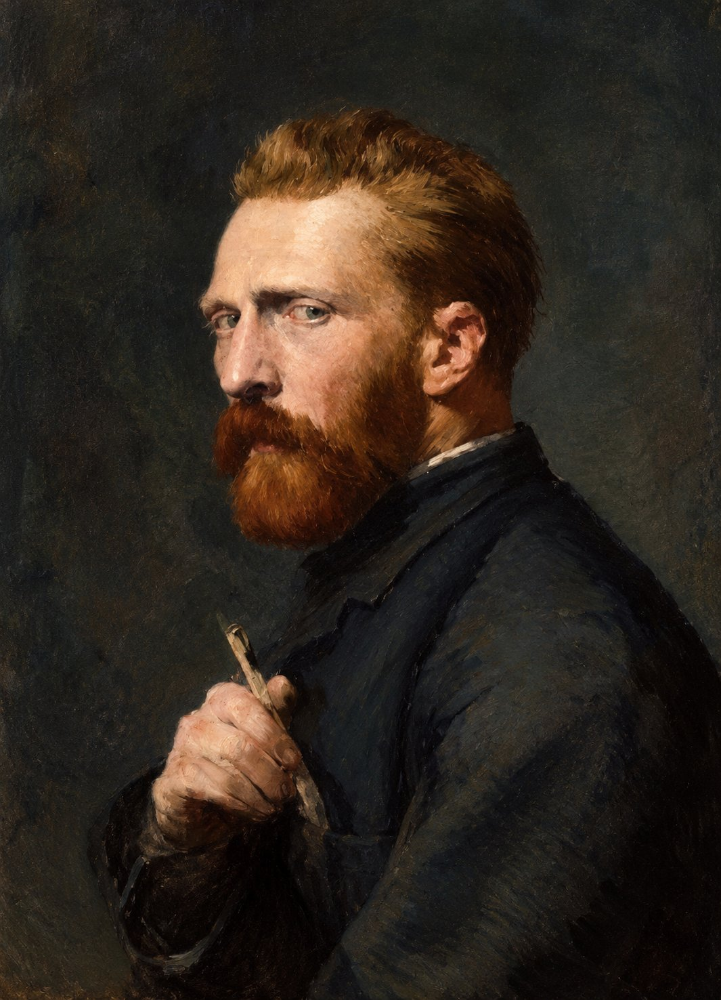
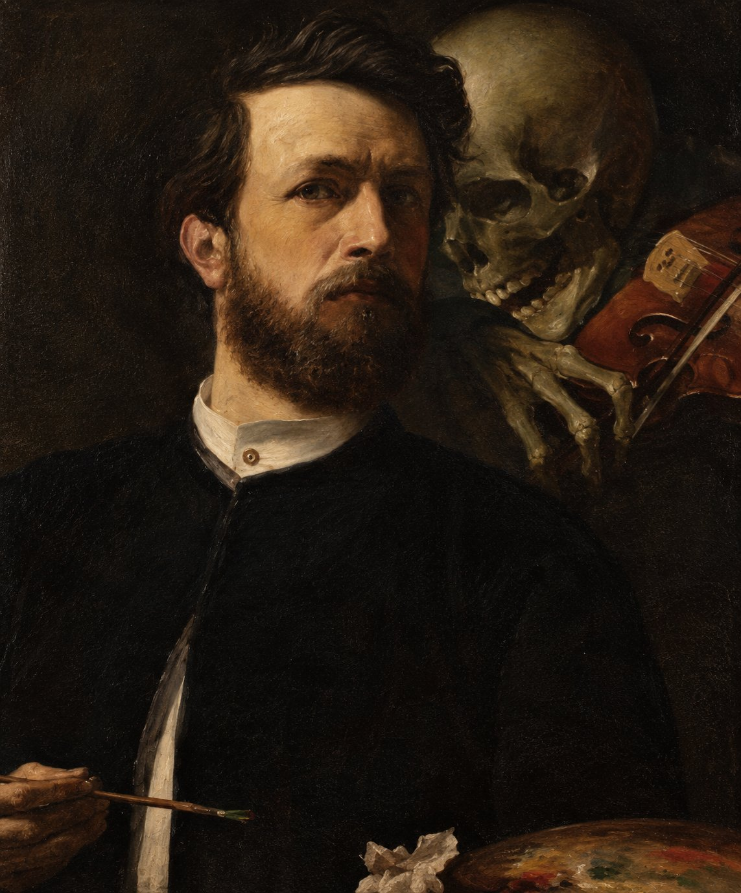
Chapter 03 · Masterpieces
Select a work to read
the story behind it

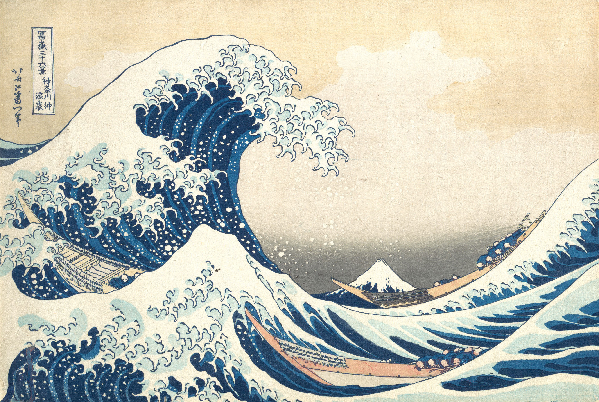
Let the brushstrokes speak
before you even look
closer

What we remember depends on what we keep.
“History is not behind us. It is the ground we stand on.”